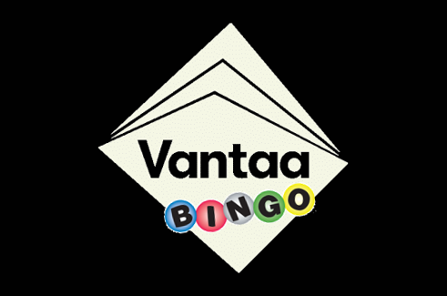

Kuva: Juuso Salakka
Kuva: Juuso Salakka

Klikkaa esittelykohteita ylläolevasta bingoruudukosta!
Yhdessä bingoruudussa on useimmiten monta vaihtoehtoista vierailukohdetta. Voit valita siis ruutua kohden minkätahansa siinä esitellyistä kohteista. Tavoitellun yhden bingosuoran saavuttamiseksi riittää neljässä (4) perättäisessä (vaakaan, pystyyn tai vinottain) ruudussa vierailu ja kuvan ottaminen valitsemasta kohteesta.
Bingoruudukon taustakuvassa on käytetty taiteellisia vapauksia, joten kohteet eivät sijaitse maantieteellisesti ja suhteessa toisiinsa juuri kuvan mukaisesti. Tästä johtuen kohteiden todellisen sijainnin tarkistaminen kartalta on suositeltua bingosuoran suunnittelussa.